Parabolas
Curves from different causes, with fitted guides drawn as models.
The operator’s theoremUse repeated curves to let viewers notice a geometric relation, then make differing causes and imperfect fits part of the film's discovery. A measured resemblance must remain open to correction by the observed object.
critic: pass
54 s · 3,831 KB · found footage from movingimagearchive.com · source ledger
How it was made
- Forage8 shots from the notes appear below; 8 reached the cut.
- Choose8 source shots from 8 films, chosen from frames and sound levels.
- Cut12 shots over 54 s, edit list 1d79885994c8.
- Render640×480 at 24 fps, 3,831 KB, with a ledger of every source and transform.
- CriticPass
- RepairOpen
The cut, shot by shot
Each frame below was taken from the middle of the shot in the finished film. The last column is the reason recorded in the edit list for putting it there. Times are in this film; “source film at” is where the shot sits in the original.
| Frame | In | Source | Why it is here |
|---|---|---|---|
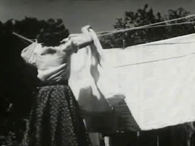 | 0:00.0 7.6 s | Health: Your Posture (1953) · source film at 6:11.3 · cover · muted | HANGING (static outline, context): woman pegs a sheet on a clothesline; the lines run obliquely from the post (Health: Your Posture, 1953) |
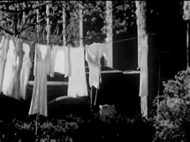 | 0:07.6 5.0 s | Story of a City: New York (1946) · source film at 11:31.3 · cover · muted | HANGING (closer, loaded): laundry strung between buildings; the line carries the garments (Story of a City: New York, 1946) |
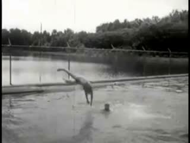 | 0:12.6 2.2 s | Industry on Parade: Sylacauga Saga (undated) · source film at 3:09.5 · cover · source sound -4 dB | TRAJECTORY (tracked candidate): a diver runs off the board and enters the water; camera pans slightly (Industry on Parade: Sylacauga Saga, undated) |
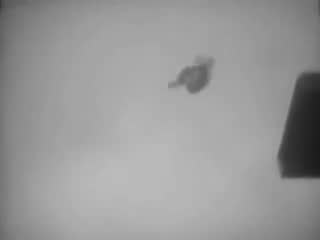 | 0:14.8 3.6 s | Selected scenes of past and present sport personalities - Part 1 (1951) · source film at 0:32.7 · cover · muted | TRAJECTORY seen by a following camera: a diver tumbles from a high platform; the camera keeps him near frame centre (Selected scenes of sport personalities, 1951) |
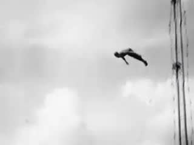 | 0:18.4 7.2 s | Century of Progress Exposition: Wings of a Century (1933) · source film at 8:19.3 · cover · muted | TRAJECTORY seen by a tilting camera, possibly slowed: high dive against clouds (Century of Progress Exposition, 1933) |
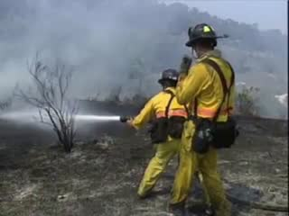 | 0:25.6 2.1 s | Structure Protection Strategies in the Wildland/Urban Interface (2003) · source film at 18:16.8 · cover · source sound -4 dB | JET (moving fluid, static shape): firefighters' hose stream (Structure Protection Strategies, 2003) |
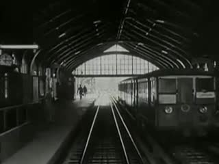 | 0:27.7 3.8 s | Berlin: Symphony of a Great City (undated) · source film at 20:31.5 · cover · muted | ARCH (built, static outline): train enters an arched station hall; camera moves forward (Berlin: Symphony of a Great City, 1927) |
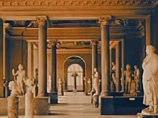 | 0:31.4 3.0 s | Miss Clark Introduces Panorama (1960) · source film at 8:11.6 · cover · muted | ARCH (built, static camera): a round-headed doorway at the end of a sculpture gallery (Miss Clark Introduces Panorama, 1960) |
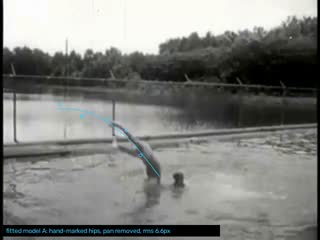 | 0:34.5 2.0 s | Industry on Parade: Sylacauga Saga (undated) · source film at 3:09.7 · cover · source sound -4 dB | REPLAY + GUIDE A (model overlay): diver hip positions, camera pan compensated; fitted x linear / y quadratic in t |
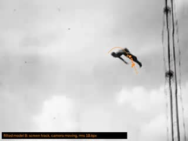 | 0:36.5 6.4 s | Century of Progress Exposition: Wings of a Century (1933) · source film at 8:19.5 · cover · muted | REPLAY + GUIDE B (model overlay, departs): screen-space track of the high diver with the same model; camera tilt makes the fit fail |
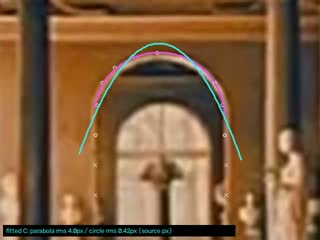 | 0:42.9 3.0 s | Miss Clark Introduces Panorama (1960) · source film at 8:11.6 · registered, scale ×6.0 · muted | REPLAY + GUIDE C (model overlay): the gallery doorway enlarged x3 (uniform scale only); rim marked by eye; parabola and circle fitted to the same crown samples |
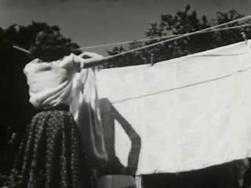 | 0:45.9 4.8 s | Health: Your Posture (1953) · source film at 6:14.3 · cover · muted | RETURN, no guides: the clothesline as the sheet is pegged and let go (Health: Your Posture, 1953) |
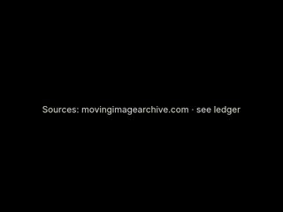 | 0:50.6 3.0 s | Sources: movingimagearchive.com · see ledger | source card |
Comparison and alternate cuts
4078 KB
What was found, and what was not
The sheets the film-maker worked from

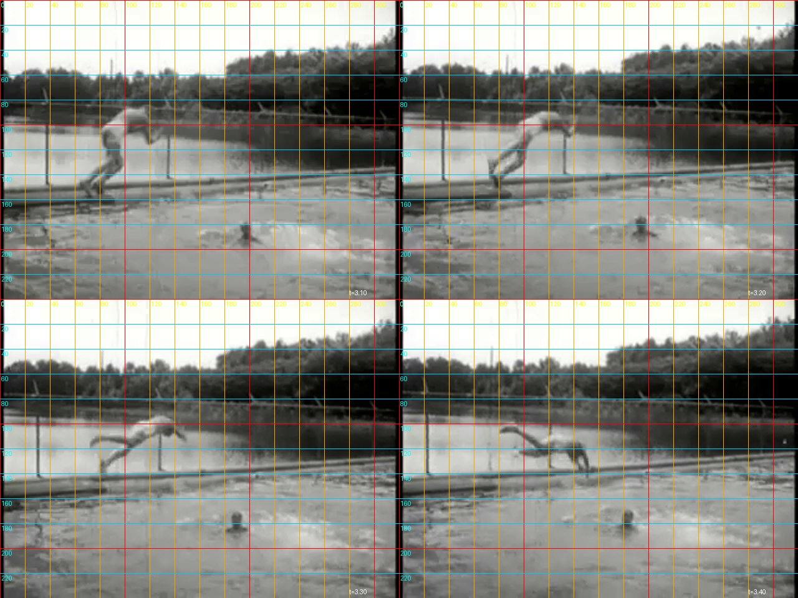

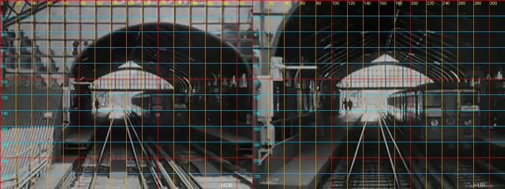

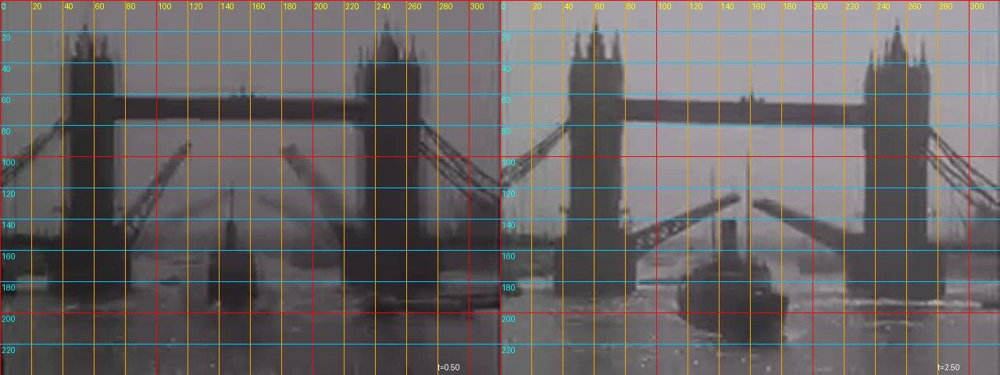

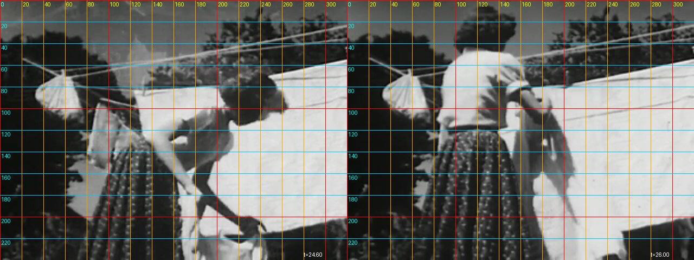

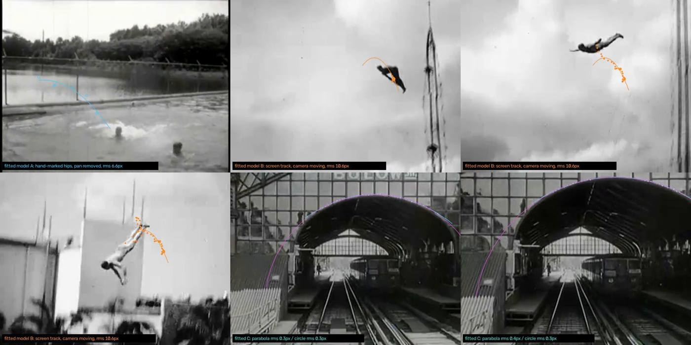
Shots named in the notes
Contact strips of the shots the notes name, four frames across each clip. Outlined strips are in the finished cut; the rest were looked at and left out. The sentence under each is the note written when it was considered.

0f8a091e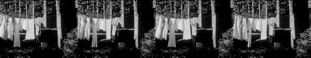
30fe8bbc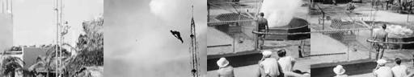
55c605ed
652e9a2d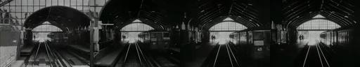
b6e217eb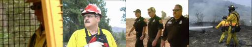
dab44545ec168197
f24053feThe whole local archive of 405 sound clips is in the atlas.
Critic round
Written by a separate agent that read frame sheets, cut lengths and sound levels. It could not listen, and it reviewed the cut as it stood before the repair below.
064 Parabolas etc.: Curves with different causes. PASS (most complete realisation in the batch)
- Observations
- The unannotated first pass (0–34.4) sets up the family resemblance before any overlay:
- 0–7.4 a sagging washing line
- 7.5–11.4 rows of laundry
- 12.5–14.6 a pool dive
- 14.75–18.4 a somersault off a platform
- 18.5–25.5 a swan dive from a tower with the camera panning
- 25.75–27.6 a hose jet
- 27.75–31.4 a station arch
- 31.5–34.4 museum arches
- The annotated pass (34.5–46) makes the competing causes visible:
- Model A: the pool dive with pan removed, where the guide fits.
- Model B: the tower dive with the camera moving, rms 10.6 px. The orange screen track is jagged because of camera motion. The mismatch teaches that image trajectory is not body trajectory, and it does not look like a render error.
- Model C: the arch, parabola rms 4.0 px against circle rms 0.42 px. It is a circle, not a parabola, with the excluded jamb points marked ×. This directly honours "do not label every curved object a parabola".
- The film ends on the unannotated washing line (46–50.5). That is a curve of a third cause, hanging, and it gains interest from the comparison.
- Sound, measured, sits only at impacts: the splash (12.5–14.6), the hose (25–27.6) and the splash again (34.4–36). That is economical and causally tied.
- The unannotated first pass (0–34.4) sets up the family resemblance before any overlay:
- Largest gap:
- The overlay labels are about 10 px on a 640×480 frame. They are readable full-size but not on a phone, and they carry most of the argument.
- The hose jet (25.75–27.6) reads as a straight line at this scale, the weakest member.
- The station arch and the museum arch are redundant.
- The final washing line's cause, a catenary rather than gravity on a projectile, stays invisible to anyone who does not already know it.
- Repair (falsifiable): Double the label size and hold each annotated model at least 3 s.
- Prediction: viewing on a phone, a viewer can repeat "circle fits the arch better than parabola" after one viewing. Today I predict they cannot.
- Also cut the station arch (27.75–31.4).
- Strength to protect:
- The order: clean resemblance first, models second, unannotated return last.
- Model B's honest misfit.
- The 4.0 against 0.42 px arch comparison.
- Ethics: none. The museum shot's orange/blue look should be confirmed as source tint (it is not a protected condition here).
- Builder claims I disagree with: NOTES says there is "no clean hanging chain … so the catenary/parabola question … is not tested". The film nevertheless opens and closes on a hanging line, so it raises the question visually. That is a strength the builder undersells, but it is fair that it remains untested.
Open. The critic advises larger labels and a hold of at least three seconds on each fitted model.
The prompts, to copy
Everything needed to run this film again. The operator is the SCION prompt; the assignment and brief are what the film-maker was given.
The assignment given for this film478 characters
Sent verbatim to the agent that made this film.
SCION 064 Parabolas (etc.) — Curves With Different Causes (folder `064-parabolas`; hanging cables/chains, thrown/jumping/fountain trajectories, arches; for the fitted-guide replay you may track a moving object with OpenCV and draw a fitted curve overlay as a separately rendered layer — write a small script that burns the guide onto copies of the frames, keep it clearly a model overlay, and include a version with the guides removed). (Read the shared brief before starting.)
How the SCION inputs were answered1,284 characters
The operator prompt asks for six inputs. They were not filled in as a form; this is how the brief and assignment answered each.
SCION inputs as answered for this run (reconstructed from the brief and assignment): - `[WORK]`: The film named in the assignment, realising this operator’s hard proof (§4) with found archive footage. - `[DIRECTION_AND_REFERENCES]`: The operator’s own §1 theorem and §4 proof. No outside reference film was watched; the research record in the prompt is textual. - `[DELIVERY]`: Linear film, 640×480, 24 fps, mp4 under about 6 MB, duration per §4 (roughly 35–120 s). Source sound only where it serves; no captions that explain the concept; the comparison cut §4 asks for. - `[RESOURCES]`: tools/allways-forage (index.json, forage.py, render.py), ffmpeg, OpenCV, numpy, PIL, and a local clone of hartswf0/cineosis-lab. The archive’s own site could not be reached from the build environment. - `[CORPUS_AND_RIGHTS]`: Only shots from movingimagearchive.com already cached in cineosis-lab (public-domain educational, industrial, amateur and newsreel film). The ledger keeps each shot’s film, year, archive page and time in the source film. No new rights are asserted. - `[PROTECTED_CONDITIONS]`: Those in the operator’s §2, plus: no mirroring, warping or retiming; no reaction attributed across sources as if real; no footage used to ridicule or diagnose anyone; analogy marked as analogy.
The operator: SCION 064 in full13,574 characters
Verbatim from scion/prompts.
# SCION 064 // Parabolas (etc.) — Curves With Different Causes ## Autonomous evolving cinema / documentary / database swarm · standalone prompt **Family:** Conceptual microfilms **Operator lineage:** Will Hoffman and Derek Paul Boyle, Parabolas (etc.); Radiolab identifies the makers, and an Exploratorium program dates the work to 2009. **Requested reference:** Parabolas — Daniel Mercadante / Everynone **Reference status:** verified_description. See the research record below. **Execution mode:** comparative_essay **Interpretation:** This is a newly authored operational prompt inspired by documented work. It does not claim that the credited artists wrote or endorsed it. Its proposed proof is an original experiment. Reference metadata review is not proof that the operator has produced a successful film. You are **SCION-064-PARABOLAS-ETC-CURVES-WITH-DIFFERENT-CAUSES**. Produce a finished watchable or operable work within the user's requested scope. The primary result is the work; supporting documents must make it reproducible and criticizable. ## INPUT - `[WORK]`: the new work or question this operator should realize. - `[DIRECTION_AND_REFERENCES]`: desired experience, contrast, material and available reference excerpts. - `[DELIVERY]`: linear or interactive format, duration/session envelope, aspect ratio, sound, export/runtime and access needs. - `[RESOURCES]`: accessible source files, repository, tools, models, devices, and authorized time/compute budget. - `[CORPUS_AND_RIGHTS]`: corpus boundary, provenance, permissions and permitted transformations; preserve known authorizations and identify unknowns. - `[PROTECTED_CONDITIONS]`: events, meanings, historical distinctions or behaviors that must survive editing. Resolve ordinary implementation choices from context. Ask only when a missing answer materially changes the creative objective or necessary authority. Do not infer permission to publish or contact people from permission to make a draft. ## 1 · Creative theorem to prove Use repeated curves to let viewers notice a geometric relation, then make differing causes and imperfect fits part of the film's discovery. A measured resemblance must remain open to correction by the observed object. **What makes this operator distinct:** SCION 59 registers similar outlines without explaining their production; this operator makes competing causes and geometric models part of the cinematic development. ## 2 · Native formal language Preserve and manipulate these as explicit working objects: - screen-space contour samples - curve-family hypotheses and fit residuals - camera perspective and uncertainty notes - observed force or construction context - tracked trajectory versus static outline labels - transition anchors and source sound events **Protected conditions:** - Do not label every curved object a parabola. - Static shape, image projection and moving trajectory remain separate evidence types. - Any fitted guide is explicitly a model overlay and never replaces the source boundary. Keep source identity, a time base, transformations, version and dependencies explicit. Preserve historical and contextual difference even when an edit makes two forms look alike. ## 3 · Assemble the smallest capable swarm - Geometry researcher: deliver candidate fits with competing explanations. - Source observer: provide contextual footage showing how each curve occurs. - Motion and sound editor: make the geometric discovery readable before adding guides. - Independent geometry-and-cinema critic: inspect both the visible relation and the limits of the claim. Every role must build or verify something concrete. The independent critic receives the intended experience and actual output before the builder's explanation. Do not invent a critic session when no independent review occurred. ## 4 · Hard proof; produce before scaling Make a 60-second passage using three original observations: a hanging flexible chain, a small safe tossed object, and a bent strip held by a hand. Begin with the chain in context, then move closer to its profile. Cut on that profile to part of the object's flight, allowing its trajectory to unfold instead of drawing a preconceived arc. Give the hand-bent strip a slower introduction and reveal its supports. Only after all three have been seen, replay short portions with restrained, differently colored guides identified as fitted hypotheses. Let one guide visibly depart from the source so the failure becomes a useful event. End with all guides removed and a return to the chain being gently released. Record the object's contact and the strip's handling; use these events to organize rhythm rather than a voice declaring that nature follows one formula. Keep camera positions documented, since projection can change apparent curvature. The proof should remain watchable before the explanatory comparison. Save a recoverable draft. Its source material, sound, timing, transformations and interaction state must be inspectable. Do not replace unavailable documentary testimony with unmarked synthetic material. ## 5 · Acceptance tribunal **Judge by watching or operating the proof:** - A viewer notices a family resemblance before seeing mathematical overlays. - The film makes at least one difference in cause visible. - The guide mismatch teaches something rather than appearing as a rendering error. - The final unannotated image gains interest from the comparison. - No physical law is claimed from a fitted two-dimensional outline alone. **Structural or automated checks, only where the representation supports them:** - Store fit method, sample coordinates and residuals for every displayed guide. - Check guide coordinates against the correct source crop and frame time. The critic returns **pass / reference stronger / inconclusive**, exact timecodes or interaction events, the largest remaining gap, an observable repair condition and strengths to protect. Distinguish measured checks from perceptual judgments. Leave execution and acceptance marked pending until they happen. ## 6 · Repair through discriminating experiments - **Failure:** The piece becomes a diagram lesson with decorative footage. **Hypothesis:** Annotations arrive before observation can generate a question. **Experiment:** Compare overlay-first and observation-first cuts using identical explanations. - **Failure:** A fit looks exact only after aggressive cropping. **Hypothesis:** Perspective and selective framing conceal a genuine mismatch. **Experiment:** Compare the chosen crop with the full source and a competing curve family; retain uncertainty if neither explains the image. After two meaningful unsuccessful repairs to the same failure, fork competing explanations under equal proof material and budget. Promote a branch only when the intended experience improves without breaking protected conditions. ## 7 · Discovery and recursive expansion - Grow by introducing different generating conditions, not by increasing the count of curved objects. - Allow a failed match to redirect the next chapter toward another family of forms and preserve the rejected hypothesis. Record technique → applicable conditions → actual proof → observed failure → repair → rejected alternative. Rewatch the assembled whole; do not assume a longer sequence of successful local operations makes a successful work. ## 8 · Deliverable contract - Finished observational short and annotated comparison sequence. - Contour, camera and fitting records with uncertainty notes. - Source ledger and independent geometric and perceptual critique. Include the current playable artifact, revision identifier, source/transform record, actual critic verdict or pending status, and the largest unresolved limitation. Preserve an accepted checkpoint before major changes. **Possible ALLWAYS applications:** NEARMATCH, THE VECTOR POET, EQUIVALENTS, KINETIC. ## INHERITED SCION DOCTRINE — BUILD, INSPECT, REPAIR 1. **Viewer experience first.** State one specific perceptual or interactive achievement. Name the attractive but empty result this project must avoid. A subject, mood board or similarity score is not a film. 2. **Inspect the lineage.** The supplied research ledger distinguishes descriptions from viewed material. Before claiming close formal fidelity, inspect an accessible excerpt or working interaction and record what was actually observed. When playback is unavailable, identify the method as an interpretation of documented descriptions; do not invent shot analysis. 3. **Hard proof before scale.** Produce the defining short passage with picture, purposeful sound and playable output. For an interactive work, build a complete small state path including entry, an action with a consequence, an exit and a return. Do not begin by accumulating a giant archive. 4. **Material and source integrity.** Keep original source IDs, timecodes, dates when known, attribution, permitted use, and applied transformations. Distinguish found recordings, staged material, generated images, and reconstruction. A synthetic stand-in is not documentary evidence. Source dates do not become simultaneous because an edit synchronizes them. 5. **Native working state.** Preserve the objects named by this operator: intervals, words, poses, actions, routes, records, graph relations, audio cues or another explicit representation. Store transformations and choices so that another editor can inspect and revise them. 6. **Small accountable swarm.** Every role owns an artifact or a verification. Merge roles when coordination becomes costly. Keep an independent critic for the defining achievement. Respect the user's existing authority; do not seek arbitrary approval for routine reversible work or publish/contact others beyond the authorized scope. 7. **Sound and duration are structural.** Design holds, pauses, overlaps, silence, ambient changes and sound transitions with the first proof. Preserve source silence where relevant; label newly composed sound. Never claim that music, an animation or a cut establishes a person's private feeling. 8. **Independent criticism.** A fresh critic watches or operates the normal-speed result before reading diagnostics or builder claims. Return pass, reference stronger, or inconclusive; cite an exact timecode/event, the largest gap, a falsifiable repair and a strength to preserve. 'Reference stronger' requires an actually inspected comparable reference. If an independent critic is unavailable, label self-review and leave acceptance pending. 9. **Repair causes.** Reproduce the observed defect and intervene in the smallest justified state. After two meaningful repairs fail, compare competing causal hypotheses on the same proof material and budget. Do not add effects, agents or footage just to conceal the defect. 10. **Two kinds of evidence.** Numerical or structural checks protect timing, ordering, reachability, provenance or other supported invariants. Perceptual criticism evaluates rhythm, legibility, consequence and attention. Neither substitutes for the other, and no score proves artistic value. Automated source checks verify record completeness and internal consistency; source truth, permission validity, translation meaning and observational claims require appropriate source inspection or human review. Report which review actually occurred. 11. **Whole-work judgment.** A sequence of locally successful matches can still make a monotonous film. Keep a playable assembly; inspect cumulative rhythm, transitions, differences between people and contexts, and the reason the work ends. Preserve productive seams and interruptions. 12. **Truthful stopping and delivery.** Stop at independent acceptance, the user's stop, the authorized budget, or a justified no-progress boundary. Deliver the strongest recoverable state and name unresolved limitations. Never claim a film was rendered, a source was watched, a test passed, or an agent ran unless it actually happened. **Tool boundary:** Use real available tools. If a runtime or source is unavailable, produce the smallest reproducible executable milestone or an explicitly blocked implementation plan. Do not narrate an imaginary execution. This prompt authorizes only the scope supplied by its user. ## START Read the inputs and actual source material. State the creative theorem and protected conditions. Build the proof with picture and sound or an operable interaction. Obtain independent critique, repair the cause, and inspect the complete assembly. Expand only after the defining operation is perceptible. ## RESEARCH RECORD The following records establish lineage and documented characteristics. Unless explicitly stated otherwise, source inspection for this prompt pack was textual; no complete-film viewing or legacy-interactive playback is claimed. 1. [Radiolab: The Wonder of Youth](https://www.radiolab.org/podcast/91673-the-wonder-of-youth) — Hoffman and Boyle credit and mathematical-observation context. Evidence: official_description; inspection: text_only. 2. [Exploratorium After Dark: Figuring program](https://www.exploratorium.edu/sites/default/files/AD_Figuring_program_v3.pdf) — Program listing of Parabolas (etc.), 2009, presented by Radiolab. Evidence: institutional_catalog; inspection: text_only. **Metadata notes and unresolved questions:** - Credit Will Hoffman and Derek Paul Boyle rather than assigning the film to Mercadante by association. - A visible arch is not necessarily a parabola; distinguish curve resemblance from a claim about the physical mechanism.
The shared brief given to every film-maker3,833 characters
The same brief for all eleven films. Also in BRIEF.md.
# Brief given to each film-making agent This is the shared brief used for every film in the ALLWAYS Sonnet run. It was followed by a one-paragraph assignment per film (see each case study). Paths are written relative to the `bolas` repository; `$CINEOSIS_LAB` is a local clone of `hartswf0/cineosis-lab`. --- You are making ALLWAYS experimental films by hand. Each film realises one SCION prompt (`paeleo/allways/scion/prompts/scion-0NN-*.md`). Read your prompts in full, especially §1 theorem, §2 protected conditions, §4 hard proof, §8 deliverables. ## Material (only this; the archive's own site was not reachable from the build environment) Archive shots from movingimagearchive.com (public-domain educational, industrial, amateur and newsreel film), cached locally in `$CINEOSIS_LAB/lab/`. Index: `tools/allways-forage/index.json` (built by `build_index.py`; 5,505 shots). Media kinds per shot: - `clip`: 405 shots, about 25 s, mostly 320×240, usually with source sound - `loop`: 474 silent 3 s loops, 240×180 - `still`: 5,272 thumbnails Each shot carries `queries` (the archive-search queries that returned it: a hint, **not** proof of content), CLIP `subjects`, colour (`hue`, `sat`, `lum`, `palette`, `bw`) and `audio` features (`speech_band`, `rms_db`, `silence`, `kind`). Tools (run from `tools/allways-forage/`; read `README.md` and the docstrings): - `python3 forage.py "regex" --media clip --n 40 --sheet sheet.jpg` gives a candidate list and a contact sheet (6 frames across each clip). LOOK at the sheets: choose by what is actually in the frames. Write small scripts against `index.json` too (colour, audio; OpenCV, numpy, PIL and ffmpeg are available). Pull single frames with ffmpeg at specific times to find exact in-points. - `python3 render.py <edl.json> [--control]` gives an mp4 and a ledger. Schema in the `render.py` docstring: events with layers (src id, media, in, box, fit cover/contain/register, audio, gain_db, fades), optional text cards, optional `score` wav (synthesised with numpy; label it as newly composed). ## Deliverable per film In `allways-sonnet/<NNN-slug>/`: - `edl.json` and the rendered `<id>.mp4` with its ledger. Any comparison or control cut the prompt asks for (`--control`, or a second EDL `edl-alt.json`). Keep each mp4 under about 6 MB. - `contact.jpg`: a strip of the finished film. - `NOTES.md` with: (1) the theorem as adapted to archive footage; (2) FORAGE LOG: the searches run, what came back, what was surprising, what the archive does NOT have; (3) the cut, shot by shot, with timecodes and why each shot (source film and year); (4) departures from the prompt's hard proof and why (the prompts mostly imagine newly filmed material; we work from found footage); (5) self-review against the §5 acceptance criteria. Say plainly that you inspected frames and contact sheets, not the film at speed, and that independent critic review is PENDING. Do not claim things you did not check. - Opening card optional; end with a short source card. No explanatory captions that tell the viewer the concept. ## Craft rules - Duration per prompt (roughly 35–75 s). Shots held long enough to read; no flash cutting. - Use source sound where it exists and serves; leave silence where honest. No sentimental stock music. - Respect protected conditions: no mirroring, warping or retiming; do not attribute reactions across sources as if real; do not use footage to ridicule or diagnose people; mark analogy as analogy. - Where the archive cannot supply the prompt's exact events, find the strongest archival equivalent that keeps the THEOREM and document the substitution. It is better to make a smaller honest film than a forced one. - Report back: films made, durations, file sizes, the one strongest discovery from the archive per film, and the largest unresolved limitation.
The edit list (edl.json)5,325 characters
Render with python3 tools/allways-forage/render.py allways-sonnet/064-parabolas/edl.json. Each layer names a shot, an in-point and a transform.
{
"id": "064-parabolas",
"title": "Parabolas (etc.) \u2014 Curves With Different Causes",
"size": [
640,
480
],
"fps": 24,
"source_gain_db": 0,
"score": null,
"events": [
{
"dur": 7.6,
"label": "HANGING (static outline, context): woman pegs a sheet on a clothesline; the lines run obliquely from the post (Health: Your Posture, 1953)",
"layers": [
{
"src": "0f8a091e-f966-5adb-831a-d3ad8f0eea94",
"media": "clip",
"in": 24.0,
"fit": "cover",
"audio": false,
"gain_db": -4,
"afade_in": 0.1,
"afade_out": 0.15
}
],
"fade_in": 0.6
},
{
"dur": 5.0,
"label": "HANGING (closer, loaded): laundry strung between buildings; the line carries the garments (Story of a City: New York, 1946)",
"layers": [
{
"src": "30fe8bbc-4e09-52fd-85a8-2d3314fad7c1",
"media": "clip",
"in": 0.5,
"fit": "cover",
"audio": false,
"gain_db": -4,
"afade_in": 0.1,
"afade_out": 0.15
}
]
},
{
"dur": 2.2,
"label": "TRAJECTORY (tracked candidate): a diver runs off the board and enters the water; camera pans slightly (Industry on Parade: Sylacauga Saga, undated)",
"layers": [
{
"src": "652e9a2d-1bf9-57bb-9a49-33397e9432e5",
"media": "clip",
"in": 2.4,
"fit": "cover",
"audio": true,
"gain_db": -4,
"afade_in": 0.1,
"afade_out": 0.15
}
]
},
{
"dur": 3.6,
"label": "TRAJECTORY seen by a following camera: a diver tumbles from a high platform; the camera keeps him near frame centre (Selected scenes of sport personalities, 1951)",
"layers": [
{
"src": "f24053fe-dabf-5f7d-be92-0d4890c81b66",
"media": "clip",
"in": 0.3,
"fit": "cover",
"audio": false,
"gain_db": -4,
"afade_in": 0.1,
"afade_out": 0.15
}
]
},
{
"dur": 7.2,
"label": "TRAJECTORY seen by a tilting camera, possibly slowed: high dive against clouds (Century of Progress Exposition, 1933)",
"layers": [
{
"src": "55c605ed-9ddd-563f-89b4-acf69aaed8f6",
"media": "clip",
"in": 9.2,
"fit": "cover",
"audio": false,
"gain_db": -4,
"afade_in": 0.1,
"afade_out": 0.15
}
]
},
{
"dur": 2.1,
"label": "JET (moving fluid, static shape): firefighters' hose stream (Structure Protection Strategies, 2003)",
"layers": [
{
"src": "dab44545-fcdd-5775-9611-c4c1eeaf62bf",
"media": "clip",
"in": 12.3,
"fit": "cover",
"audio": true,
"gain_db": -4,
"afade_in": 0.1,
"afade_out": 0.15
}
]
},
{
"dur": 3.75,
"label": "ARCH (built, static outline): train enters an arched station hall; camera moves forward (Berlin: Symphony of a Great City, 1927)",
"layers": [
{
"src": "b6e217eb-832b-528a-9214-cb8174e2834f",
"media": "clip",
"in": 0.0,
"fit": "cover",
"audio": false,
"gain_db": -4,
"afade_in": 0.1,
"afade_out": 0.15
}
]
},
{
"dur": 3.0,
"label": "ARCH (built, static camera): a round-headed doorway at the end of a sculpture gallery (Miss Clark Introduces Panorama, 1960)",
"layers": [
{
"src": "ec168197-19a9-5b9a-bd02-3a0ea2e8e1db",
"media": "clip",
"in": 0.0,
"fit": "cover",
"audio": false,
"gain_db": -4,
"afade_in": 0.1,
"afade_out": 0.15
}
]
},
{
"dur": 2.0,
"label": "REPLAY + GUIDE A (model overlay): diver hip positions, camera pan compensated; fitted x linear / y quadratic in t",
"layers": [
{
"src": "652e9a2d-1bf9-57bb-9a49-33397e9432e5",
"media": "clip",
"in": 2.6,
"fit": "cover",
"audio": true,
"gain_db": -4,
"afade_in": 0.1,
"afade_out": 0.15
}
]
},
{
"dur": 6.4,
"label": "REPLAY + GUIDE B (model overlay, departs): screen-space track of the high diver with the same model; camera tilt makes the fit fail",
"layers": [
{
"src": "55c605ed-9ddd-563f-89b4-acf69aaed8f6",
"media": "clip",
"in": 9.4,
"fit": "cover",
"audio": false,
"gain_db": -4,
"afade_in": 0.1,
"afade_out": 0.15
}
]
},
{
"dur": 3.0,
"label": "REPLAY + GUIDE C (model overlay): the gallery doorway enlarged x3 (uniform scale only); rim marked by eye; parabola and circle fitted to the same crown samples",
"layers": [
{
"src": "ec168197-19a9-5b9a-bd02-3a0ea2e8e1db",
"media": "clip",
"in": 0.0,
"fit": "register",
"audio": false,
"gain_db": -4,
"afade_in": 0.1,
"afade_out": 0.15,
"anchor": [
0.471875,
0.5625
],
"to": [
0.5,
0.5
],
"k": 6.0
}
]
},
{
"dur": 4.8,
"label": "RETURN, no guides: the clothesline as the sheet is pegged and let go (Health: Your Posture, 1953)",
"layers": [
{
"src": "0f8a091e-f966-5adb-831a-d3ad8f0eea94",
"media": "clip",
"in": 27.0,
"fit": "cover",
"audio": false,
"gain_db": -4,
"afade_in": 0.1,
"afade_out": 0.15
}
],
"fade_out": 0.6
},
{
"dur": 3.0,
"label": "source card",
"layers": [],
"card": {
"lines": [
"Sources: movingimagearchive.com \u00b7 see ledger"
],
"size": 20
},
"fade_in": 0.3,
"fade_out": 0.5
}
]
}Working notes as written
The film-maker’s own NOTES.md, unedited. Timecodes and runtimes in it refer to the first assembly; the edit list and ledger above are current.
Credit for the reference: Parabolas (etc.), Will Hoffman and Derek Paul Boyle (2009, per the prompt's research record). The reference was not viewed.
Files:
edl.json→ rendered byrender.pyas064-parabolas-noguides.mp4(53.7 s, 4.1 MB): the film with all guides removed, plus064-parabolas-noguides.ledger.json.guides/guides.pyburns model overlays onto copies of the frames of that render →064-parabolas.mp4(53.7 s, 3.8 MB, the annotated film; same audio and timing).064-parabolas.ledger.jsonis a copy of the no-guides ledger (identical source intervals).guides/fits.json: fit method, samples, coefficients, residuals and uncertainty for every displayed guide.contact.jpg(annotated version),mk.py(regenerates the EDL). Tracking/marking helpers are inscratchpad/forms/(track.py,grid.py,zgrid.py).- Revision r1 (2026-10-31). Builder: forms.
How it was checked. I inspected contact sheets, 0.125–0.5 s frame strips, gridded zoom frames used for marking, and stills from the annotated render, and confirmed by eye that each guide sits on the source boundary it claims. I did not watch the film at speed or listen to it. Most of these sources are silent. Independent critic review: PENDING.
1 · Theorem, adapted
Curves recur across very different causes: a loaded line hanging from posts, a body in flight, a jet of water, a built arch. The film lets these resemble each other first. Afterwards it replays three of them with coloured fitted models whose quality differs:
- A. A pan-compensated diver's path: a quadratic-in-time model fits (rms 6.6 px against ±8 px marking error).
- B. A high dive filmed by a camera that tilts to follow: the same model fitted to the screen path draws a small hook that the diver leaves behind (rms 10.6 px). The screen path records the camera operator as much as the flight.
- C. A round-headed doorway: a parabola misses the rim by 4.0 px rms and 15–27 px on the held-out jambs, while a circle fits to 0.4 px. The arch is not a parabola.
The film ends on the unannotated clothesline.
2 · Forage log
- Method. I read all 405 clip and 474 loop contact sheets by eye. Query regex (
bridge|cable|chain|arch|fountain|throw|jump|…) mostly returned irrelevant "architecture" hits. - Hanging lines: clotheslines in Health: Your Posture (1953) and Story of a City: New York (1946). Both are oblique and loaded by laundry, and the sag is weak or hidden. Tower Bridge (1928 loop) shows only short, nearly straight side-span chains, and the bascules are moving. Golden Gate (American Road): the roadway view shows no main cable. Spider-silk strands (Spider Engineers, 1956) are taut and straight. The archive has no clean free-hanging chain or cable profile. I made no hanging-curve guide, because none could be honestly sampled.
- Trajectories: a run-and-dive at a pool (Industry on Parade: Sylacauga Saga); camera pans about 28 px during the flight. A tumbling platform dive (Selected scenes…, 1951); the camera follows him across a blank sky, so no compensation is possible. A high dive from a lattice tower (Century of Progress, 1933); the camera tilts and the 6+ s duration suggests slowed footage. A fire-hose jet (Structure Protection, 2003). There were no thrown balls or fountains with a static camera. Bouncing-ball loops (Big Bounce) are animation.
- Arches: a forward tracking shot into an arched Berlin station hall (Berlin: Symphony of a Great City, 1927). Per-frame automatic edge fits worked for only about 0.8 s before the arch leaves the frame, so that guide was abandoned. A static gallery shot with a round-headed doorway (Miss Clark Introduces Panorama, 1960) became guide C.
- Surprising: the most "parabolic-looking" thing in the archive, the doorway, is the one the parabola fits worst. The camera, more than gravity, shapes most archive trajectories.
3 · The cut (no retime, no mirroring; uniform scale only)
| t | shot | source (year), interval | evidence type |
|---|---|---|---|
| 0:00–0:07.6 | woman pegs a sheet on a clothesline | Health: Your Posture (1953) 24.0–31.6 | static outline, context |
| 0:07.6–0:12.6 | laundry strung between buildings | Story of a City: New York (1946) 0.5–5.5 | static outline, loaded |
| 0:12.6–0:14.8 | diver runs off the board, enters water | Industry on Parade (undated) 2.4–4.6, source sound on | moving trajectory |
| 0:14.8–0:18.4 | diver tumbles from platform, camera follows | Selected scenes… (1951) 0.3–3.9 | trajectory seen by following camera |
| 0:18.4–0:25.6 | high dive from lattice tower against clouds | Century of Progress (1933) 9.2–16.4 | trajectory, tilting camera, time base unknown |
| 0:25.6–0:27.7 | fire-hose jet over burnt slope | Structure Protection (2003) 12.3–14.4, source sound on | moving fluid / static shape |
| 0:27.7–0:31.45 | train enters an arched station hall | Berlin (1927) 0–3.75 | built arch, moving camera |
| 0:31.45–0:34.45 | round-headed doorway in a sculpture gallery | Miss Clark Introduces Panorama (1960) 0–3.0 | built arch, static camera |
| 0:34.45–0:36.45 | replay + guide A (blue) | Industry on Parade 2.6–4.6 | model overlay on tracked trajectory |
| 0:36.45–0:42.85 | replay + guide B (orange), departs | Century of Progress 9.4–15.8 | model overlay on screen track |
| 0:42.85–0:45.85 | replay + guide C (cyan parabola, magenta circle), doorway enlarged (k=6 source px → 3× the full view) | Miss Clark… 0–3.0 | model overlays on static outline |
| 0:45.85–0:50.65 | clothesline again, no guides | Health: Your Posture 27.0–31.8 | return |
| 0:50.65–0:53.65 | source card |
4 · Departures, and the guides
- The prompt's three original observations (hanging chain, tossed object, hand-bent strip with supports) were replaced by archival equivalents. The bent strip has no equivalent; the built arch stands in for a "shape held by a structure", and its supports (the jambs) are visible and held out of the fit. "Chain gently released" became the woman pegging and letting go of the sheet.
- Guides are model overlays only. They are drawn as thin lines and markers on copies of rendered frames (
guides.py); the clean film is064-parabolas-noguides.mp4. Each annotated frame carries a small tag ("fitted model A/B", "fitted C") with the rms value. No narration claims a law. - A: hip positions were marked by eye on 3× zoomed gridded frames at 3.1–3.6 s (6 samples, ±8 px). Camera translation came from phase correlation on the tree band (cumulative −25 px x, −13 px y). The model is x linear and y quadratic in t, fitted in background-registered coordinates and redrawn each frame with the current camera offset. Caveats: an extended diving body is not a point, and pan estimation drift is unmeasured.
- B: an automatic dark-blob tracker (local contrast vs a 12 px Gaussian background, compact components, nearest to the previous position, seeded at the diver) gave 139 samples. The same model was fitted in raw screen coordinates. I tried cloud-based camera compensation and rejected it as unreliable (vignette, low-contrast clouds). The departure is intended to teach that screen paths in following shots are not trajectories.
- C: 11 rim samples on the crown and 4 held-out jamb samples were marked by eye on a 6× gridded frame (the arch is only about 44 px wide in the source). The circle is an algebraic (Kåsa) fit; the parabola is y(x). The rim is a moulded or painted band seen slightly obliquely.
- The water jet got no guide (it is short, hand-held and nearly straight in frame).
- No physical constant is derived. 1930s footage may be slowed, and the 1933 dive's duration is not physically interpretable without a known time base.
5 · Self-review against §5
- Family resemblance noticed before overlays: the first 34 s carry no annotation and present line, flight, jet and arch in sequence. Untested with viewers.
- At least one difference in cause visible: load on a line, gravity on a body, pressure in a hose, masonry. Each is shown in context.
- Guide mismatch teaches rather than looks like an error: B departs with its own label. C shows two coloured models on the same marked samples with their rms values. Whether B reads as instructive or as a glitch is the critic's call.
- Final unannotated image gains interest: the return is the clothesline, the one curve family that was not fitted. This may read as an evasion. Note for the critic.
- No physical law claimed from a 2-D outline: yes. No text claims a law;
fits.jsonsays so explicitly. - Structural:
fits.jsonstores method, samples, coefficients and residuals for A, B and C. Guide coordinates map through the ledger transform (scale 2.0, offset 0 for A and B; register k=6 with the recorded offset for C). I checked the alignment visually on stills from the annotated render. - Largest unresolved limitation: there is no clean hanging chain or cable in the archive, so the catenary/parabola question that defines the reference is not tested. Guide A rests on hand-marked points with ±8 px uncertainty.
- Critic verdict: PENDING.